— ALGORITHM CONTEST / 03
第三章 排序算法
冒泡、插入、选择、希尔、堆、归并、快排与计数、基数排序逐个过一遍，最后用一张表把复杂度与稳定性对齐。
01 / SECTION
排序算法简介
- 定义：把无序序列按关键字调整为有序序列，是算法竞赛与工程中最基础的操作。
- 两类视角：
- 基于比较的排序：下界
O(n log n)（冒泡、插入、希尔、选择、堆、归并、快排）； - 非比较排序：利用值域分布，可到线性（计数、桶、基数）。
- 三个评价维度：时间复杂度（平均/最坏）、空间复杂度（是否原地）、稳定性（相等元素相对次序是否保持）。
- 稳定性只在“按多个关键字排序”时才真正有意义（先按次要关键字排、再按主要关键字排）。
- 竞赛中的实用选择：
- 需要稳定 + 最坏也 O(n log n) ⇒ 归并（或用
stable_sort）； - 通用最快 ⇒ 快排 /
sort（内省排序，最坏已受控）； - 值域小且是整数 ⇒ 计数/桶排序；
- 大整数、字符串 ⇒ 基数排序。
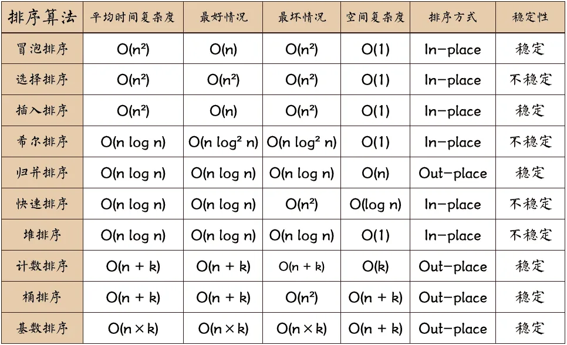
02 / SECTION
冒泡排序算法C/C++代码图文讲解
- 思想：相邻两两比较，逆序就交换；每一轮把当前最大元素“冒”到末尾。
- 轮数：n 个元素最多 n-1 轮，第 i 轮比较 n-i 次。
- 优化：设置
swapped标志，某轮没有发生交换就说明已有序，提前结束 ⇒ 最好 O(n)。 - 复杂度：时间 平均/最坏
O(n²)，最好O(n)；空间O(1)；稳定。
cpp
void bubbleSort(int a[], int n) {
for (int i = 0; i < n - 1; ++i) {
bool swapped = false;
for (int j = 0; j < n - 1 - i; ++j)
if (a[j] > a[j + 1]) std::swap(a[j], a[j + 1]), swapped = true;
if (!swapped) break;
}
}- 现实意义：教学用最直观，实际数据量大时完全不可用。
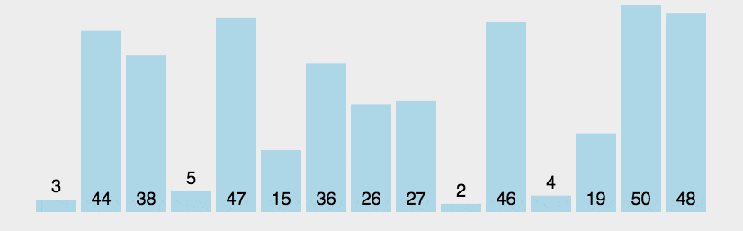
03 / SECTION
插入排序算法C/C++代码图文讲解
- 思想：像整理扑克牌——把当前元素插入到前面已有序序列的正确位置，后面的元素依次后移。
- 第 i 个元素最多比较 i 次，总比较约 n²/2。
- 复杂度：平均/最坏
O(n²)，最好O(n)（原始有序）；空间O(1)；稳定。 - 优点：常数小、几乎有序时极快，是小数组和“快排小区间”的首选（
std::sort内部对小段就退化为插入排序）。
cpp
void insertionSort(int a[], int n) {
for (int i = 1; i < n; ++i) {
int key = a[i], j = i - 1;
while (j >= 0 && a[j] > key) { a[j + 1] = a[j]; --j; } // 严格大于才后移 ⇒ 稳定
a[j + 1] = key;
}
}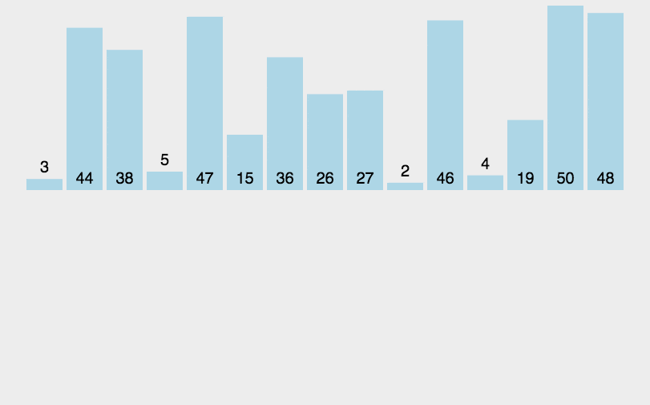
04 / SECTION
归并排序算法C/C++代码图文讲解
- 思想：分治——序列对半拆到单元素（天然有序），再两两合并有序段。
- 合并：双指针比较两段首元素，小的先放入临时数组，某段取完则把另一段剩余整段拷过去。
- 复杂度：时间稳定
O(n log n)（不受数据分布影响）；空间O(n)（临时数组 + 递归栈 O(log n)）；稳定。 - 特性：唯一能做到“稳定 + 最坏 O(n log n)”的常用比较排序；适合外部排序与链表排序（链表合并只需改指针，空间 O(1)）。
cpp
void merge(int a[], int l, int mid, int r, int tmp[]) {
int i = l, j = mid + 1, k = l;
while (i <= mid && j <= r) tmp[k++] = (a[i] <= a[j]) ? a[i++] : a[j++]; // <= 保证稳定
while (i <= mid) tmp[k++] = a[i++];
while (j <= r) tmp[k++] = a[j++];
for (int t = l; t <= r; ++t) a[t] = tmp[t];
}- 注意：合并时
a[i] <= a[j]取左边才能保持稳定。
05 / SECTION
快速排序算法C/C++代码图文讲解
- 思想：选基准 pivot，把序列划分成“≤ pivot | pivot | ≥ pivot”三段，再对两侧递归。
- 划分（Hoare / 挖坑 / 双指针）：一遍扫描
O(n)，故T(n) = 2T(n/2) + O(n) = O(n log n)。 - 复杂度：平均
O(n log n)，最坏O(n²)（每次基准都是最值，如已有序且取首元素为基准）；空间O(log n)（递归栈）；不稳定。 - 优化：随机选基准 / 三数取中（避免最坏）；小区间（如 ≤16）改用插入排序；三路划分处理大量重复元素。
- 工程实现通常用“内省排序”：快排 + 堆排兜底 + 插排收尾，保证最坏
O(n log n)。
cpp
void quickSort(int a[], int l, int r) {
if (l >= r) return;
int i = l, j = r, p = a[l + rand() % (r - l + 1)]; // 随机基准
while (i <= j) {
while (a[i] < p) ++i;
while (a[j] > p) --j;
if (i <= j) std::swap(a[i++], a[j--]);
}
quickSort(a, l, j); quickSort(a, i, r);
}- 命名的“第 14 节”与本节内容重复（同一篇快排），实际只需掌握本节。

06 / SECTION
计数排序算法C/C++代码图文讲解
- 思想：不开比较，直接统计每个值出现次数，再按值从小到大“倒出”对应个数。
- 流程：求 max/min → 计数数组
cnt[v]→ 前缀和得到“排名区间” → 从后往前回填（保证稳定）。 - 复杂度：时间
O(n + k)（k 为值域），空间O(n + k)；稳定（前缀和 + 逆序回填）。 - 限制：只适合整数且值域不大（k 不应远大于 n），负数要加偏移。
cpp
for (int i = 0; i < n; ++i) ++cnt[a[i] - minv];
for (int v = 1; v <= maxv - minv; ++v) cnt[v] += cnt[v - 1];
for (int i = n - 1; i >= 0; --i) out[--cnt[a[i] - minv]] = a[i]; // 逆序 ⇒ 稳定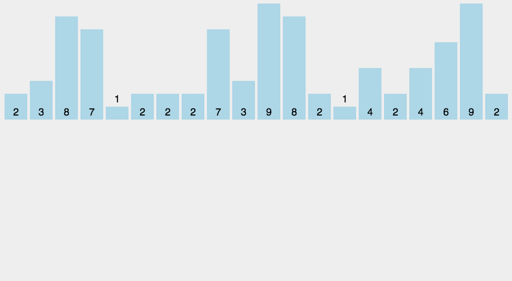
07 / SECTION
桶排序算法C/C++代码图文讲解
- 思想：按值域划分成若干“桶”（区间），把元素放进对应桶，桶内各自排序，最后按桶顺序拼接。
- 计数排序可视为“每个值一个桶、桶内不排序”的特例。
- 复杂度：平均
O(n + k)（桶内用插排且数据均匀时近似 O(n)）；空间O(n + k)；稳定（前提是桶内稳定排序）。 - 关键在映射函数：桶数太少退化成普通排序，太多浪费空间；数据分布不均会让某个桶退化成
O(n²)。 - 适用：数据均匀分布、值域已知的浮点数/大整数。
cpp
int idx = (a[i] - minv) / ((maxv - minv + 1) / m + 1);
bucket[idx].push_back(a[i]);
for (int i = 0; i < m; ++i) {
sort(bucket[i].begin(), bucket[i].end()); // 或插入排序
for (int x : bucket[i]) out[k++] = x;
}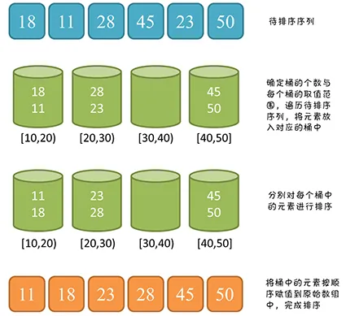
08 / SECTION
希尔排序算法C/C++代码图文讲解
- 思想：插入排序的改进——按增量 gap 把序列分成若干子序列分别插排，gap 逐步缩小到 1，最后整体插排一次。
- 好处：早期大步长让元素“大步跳跃”，快速接近最终位置；后期小步长只需少量移动。
- 增量序列：
n/2, n/4, …, 1（折半）；Hibbard2^k-1；Sedgewick 序列可逼近O(n^{4/3})。 - 复杂度：平均约
O(n^{1.3})，最坏O(n²)；空间O(1)；不稳定（相等元素会跨组交换）。
cpp
for (int gap = n / 2; gap > 0; gap /= 2)
for (int i = gap; i < n; ++i) {
int key = a[i], j = i - gap;
while (j >= 0 && a[j] > key) { a[j + gap] = a[j]; j -= gap; }
a[j + gap] = key;
}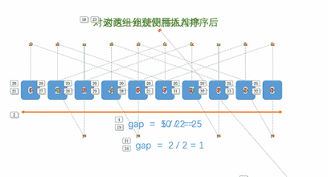
09 / SECTION
选择排序算法C/C++代码图文讲解
- 思想：每轮从剩余元素中选出最小（或最大）的，与当前位置交换。
- 无论数据如何，比较次数恒为
n(n-1)/2，交换最多 n-1 次。 - 复杂度：时间恒
O(n²)（最好也是 n²）；空间O(1)；不稳定（远端交换会打乱相等元素次序）。 - 唯一优势：交换次数少（最多 n-1 次），写 Flash/EEPROM 之类“写代价高”的场景有历史意义。
- 与插入排序对比：插入在“近乎有序”时 O(n)，选择永远 n²。
cpp
for (int i = 0; i < n - 1; ++i) {
int m = i;
for (int j = i + 1; j < n; ++j) if (a[j] < a[m]) m = j;
if (m != i) std::swap(a[i], a[m]);
}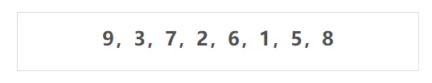
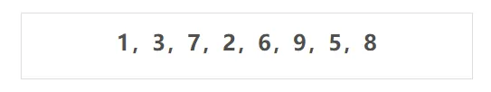
10 / SECTION
树形选择排序(锦标赛排序)C/C++代码图文讲解
- 思想：把 n 个元素看作完全二叉树的叶子，两两比较取小者上浮，根即最小值（一次“锦标赛”）。
- 取出根后，把该叶子改成 +∞，只沿它到根的路径重赛（
O(log n)），下一轮最小值随之产生。 - 复杂度：建树
O(n)，之后每次O(log n)，总计O(n log n)；空间O(n)；不稳定。 - 与堆排序的关系：思路相同（都是用完全二叉树维护最值 + 单路径调整），堆排序用数组下标隐式建树，空间 O(1)，是树形选择排序的优化版。
- 现在实际都用堆排序，树形选择排序主要作为理解“胜者树/败者树”的过渡；败者树常用于多路归并（外部排序）减少比较次数。
cpp
// 胜者树：p[i] 记录内部结点 i 的胜者下标
// 更新叶子 k 后：for (t = (n + k) / 2; t; t /= 2) p[t] = winner(p[2*t], p[2*t+1]);11 / SECTION
堆排序算法C/C++代码图文讲解
- 思想：建大根堆 → 堆顶（最大值）与末尾交换 → 堆大小减一后向下调整 → 重复。
- 两个阶段：建堆
O(n)（从n/2-1到 0 依次siftDown）；排序 n-1 次，每次O(log n)。 - 复杂度：时间 恒
O(n log n)；空间O(1)；不稳定。 - 优点：最坏也是
O(n log n)、原地、常数可控，是内省排序的兜底方案；常用于堆顶取最值的在线场景（优先队列）。
cpp
void siftDown(int a[], int i, int n) {
while (true) {
int l = 2 * i + 1, r = l + 1, m = i;
if (l < n && a[l] > a[m]) m = l;
if (r < n && a[r] > a[m]) m = r;
if (m == i) return;
std::swap(a[i], a[m]); i = m;
}
}- 注意：升序排序要建大根堆，每次把最大值换到末尾；降序则建小根堆。
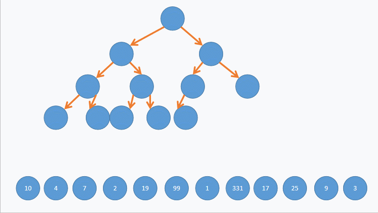
12 / SECTION
直接选择排序C/C++代码图文讲解
- 与第 9 节“选择排序”是同一个算法：每轮在无序区找最值，与无序区首元素交换。
- 名字里的“直接”是为了与“树形选择排序（锦标赛排序）”区分——前者靠线性扫描找最值，后者靠树结构找最值。
- 复杂度同选择排序：
O(n²)、空间O(1)、不稳定。 - 结论：两种选择排序都不适合实战，只需记住“直接选择 = 线性找最值”这一区别。
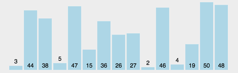
13 / SECTION
基数排序算法C/C++代码图文讲解
- 思想：按位排序——从最低位到最高位，每一轮用稳定的计数/桶排序把元素按该位分桶，高位轮结束后整体有序。
- 依赖稳定性：低位排好的次序必须被高位排序保留。
- 复杂度：
O(d(n + r))，d 为位数、r 为进制基数；空间O(n + r)；稳定。 - 取位方式：
(a[i] / base^k) % base；负数需统一加偏移或先分正负两组。 - 适用：位数少、规模大的整数/定长字符串；比比较排序更适合海量数据。
cpp
for (int exp = 1; exp <= maxv; exp *= 10) {
memset(cnt, 0, sizeof cnt);
for (int i = 0; i < n; ++i) ++cnt[(a[i] / exp) % 10];
for (int i = 1; i < 10; ++i) cnt[i] += cnt[i - 1];
for (int i = n - 1; i >= 0; --i) out[--cnt[(a[i] / exp) % 10]] = a[i]; // 逆序保稳定
copy(out, out + n, a);
}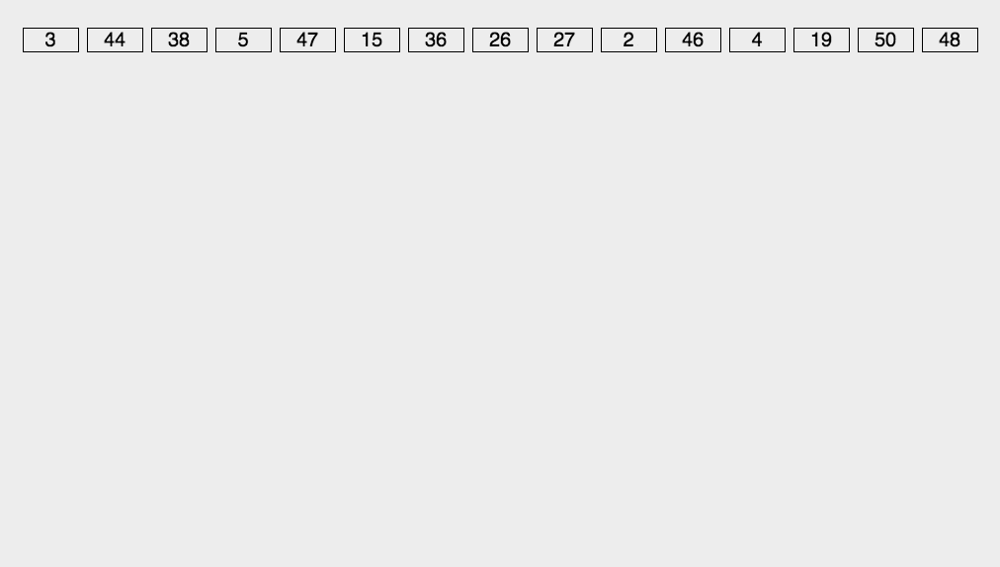
14 / SECTION
快速排序算法C/C++代码图文讲解
- 与第 5 节是同一主题的两篇文章（原站分别以“思想讲解”和“代码图文讲解”收录，URL 不同、内容基本一致），这里只补算法要点与易错：
- 划分 + 递归；平均
O(n log n)、最坏O(n²)、空间O(log n)、不稳定； - 优化点仍是随机基准、三数取中、小区间插排、三路划分。
- 补充两点易错：
- 手写快排时
while (i <= j)与i < j会导致不同版本的划分边界，递归区间写法必须与之匹配，否则可能死循环； - 基准必须是“值”而不是“下标”，交换过程中
pivot位置的元素会被换走。
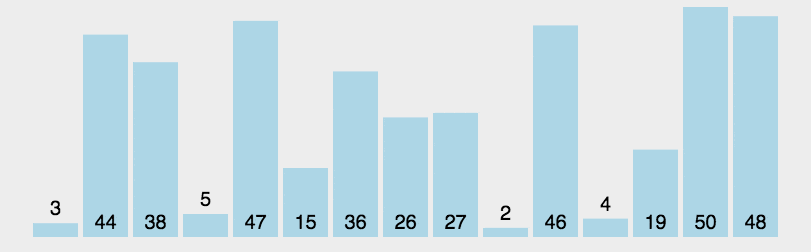
15 / SECTION
排序算法在日常的应用
- 现实中的排序几乎从不是“裸排一个数组”，而是多关键字排序、Top-K、去重、归并统计等组合需求。
- 常见用法：
- 结构体 + 多关键字比较器（成绩相同按学号）；
- 先排序再二分 / 双指针 / 贪心（很多算法的前置步骤）；
- 排序后去重（
std::unique）； - 分组统计（排序 + 相邻扫描，替代哈希）。
- 工程建议：优先用标准库（
sort/stable_sort），只在需要稳定、需要自定义内存、或值域特殊（计数/基数）时才手写。 - 复杂度速查表：
| 算法 | 平均 | 最坏 | 空间 | 稳定 |
|---|---|---|---|---|
| 冒泡 | O(n²) | O(n²) | O(1) | 是 |
| 插入 | O(n²) | O(n²) | O(1) | 是 |
| 选择 / 直接选择 | O(n²) | O(n²) | O(1) | 否 |
| 希尔 | ~O(n^1.3) | O(n²) | O(1) | 否 |
| 归并 | O(n log n) | O(n log n) | O(n) | 是 |
| 快速 | O(n log n) | O(n²) | O(log n) | 否 |
| 堆 | O(n log n) | O(n log n) | O(1) | 否 |
| 树形选择 | O(n log n) | O(n log n) | O(n) | 否 |
| 计数 | O(n + k) | O(n + k) | O(n + k) | 是 |
| 桶 | O(n + k) | O(n²) | O(n + k) | 是 |
| 基数 | O(d(n + r)) | O(d(n + r)) | O(n + r) | 是 |